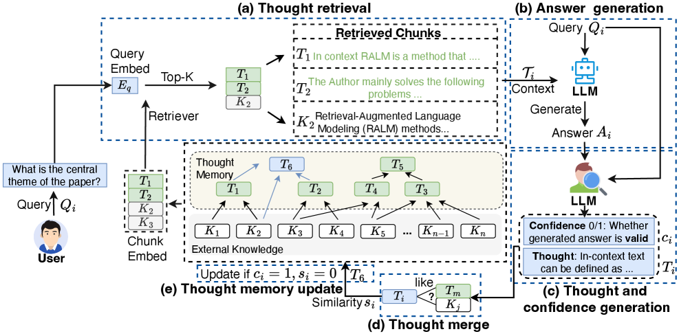

Each answer spawns a confidence-scored thought; low-quality & duplicate thoughts are filtered before write-back to memory.

Embedding similarity over (external KB ∪ thought memory) — unifies raw data and prior reasoning in one search.
LLM answers the query conditioned on retrieved raw context + relevant thoughts.
LLM abstracts Q/A into a persistent cognitive unit with a self-reported quality score for gating.
Embedding-based redundancy detection collapses near-duplicates to keep memory compact.
Low-confidence and duplicate thoughts filtered out; survivors written back for future retrieval.
Recursive linkage preserves factual traceability across thought chains.
Primary LLM ingests thoughts from specialized expert models.